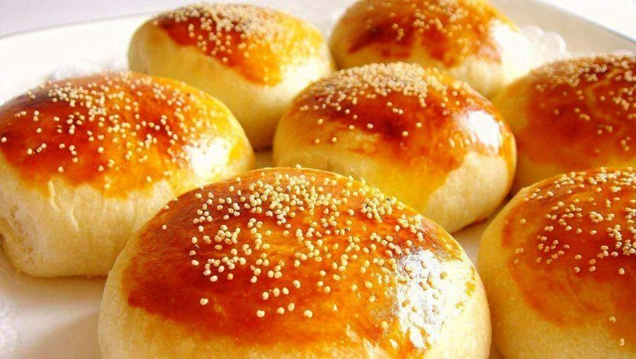

1 su bardağı su
1 su bardağı ılık süt
1 su bardağı sıvı yağ
1 paket instant maya
4 yemek kaşığı şeker
1 yemek kaşığı şeker
2 yumurta beyazı
6 su bardağı un

İlk olarak ılık su, ılık süt, şeker ve instant mayayı büyük bir kaba koyarak mayayı aktifleştiriyoruz. 15 dakika mayayı açıp beklettikten sonra yağ yumurta beyazı tuz ve unumuzu ekliyoruz. Un eklerken dikakt etmekte fayda var bazen ölçüden fazla alabiliyor. Parmaklarımızı kurtaracak şekilde biraz sıvı bir hamur yoğurduktan sonra 3 saat mayalanmaya bırakıyoruz. Daha sonra şekil verip tepsiye diziyoruz. Isıtılmış fırında 30 dakika tepsi mayasından sonra üzerine yumurta sarısı sürüp 180 derece önceden ısıtılmış fırında 30 dakika pişiriyoruz. Puf poğaçalarımız hazır. Afiyet olsun :)